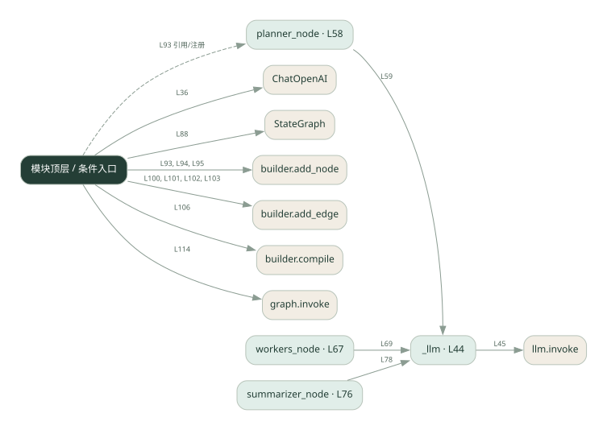

3-2 · 全课程第 42 节
图式工作流
039.py
源码快照 54eb034f10b4 · 静态解析 · 2026-09-10
01 / 要完成的事
用节点表示计划、执行与汇总，用边规定下一步。
02 / 为什么要做
流程复杂后，显式图比散落的条件判断更容易检查。
03 / 当前代码状态
使用真实 LangGraph/ChatOpenAI 接口，但图组装仍有填空。workers_node 内按列表逐项调用模型，画成多个节点不会自动变成并行。
仍有下划线占位表达式，源文件行号：88, 94, 95, 102。相应路径在补完前不能正常执行。
存在外部服务或模型依赖；执行前需按源文件配置依赖和凭据，可能联网或产生 API 费用。 本次只做静态解析，没有运行练习，也没有替你填写或修改原代码。
04 / 调用图
打开大图 ↗实线：源码中的直接调用；虚线：函数引用/注册、动态调用或按方法名推断的候选。L 是调用所在源码行号。箭头不表示执行顺序或每次必经；分支、循环、异步调度及框架内部调用需结合源码。灰色是外部/未解析目标，橙色是动态分发；省略 print、len 和常规容器操作以减少干扰。孤立函数可能尚未接入。

先从 模块入口 出发，沿箭头找到本文件函数，再查看外部调用或动态分发。右侧调用清单保留所有静态调用点，能回到原文件逐行对照。
05 / 函数定位
| 函数 / 定义行 | 职责（源码注释） | 内部调用 |
|---|---|---|
_llmL44 | 以源码函数体为准；下列调用展示其依赖。 | llm.invoke, resp.content.strip |
planner_nodeL58 | 以源码函数体为准；下列调用展示其依赖。 | _llm, s.strip().strip, s.strip, plan.split |
workers_nodeL67 | 以源码函数体为准；下列调用展示其依赖。 | _llm |
summarizer_nodeL76 | 以源码函数体为准；下列调用展示其依赖。 | 动态对象.join, _llm |
这样做的优点
阶段与连接关系清晰，节点可以单独替换。
代价与局限
图本身不会自动并行；状态字段和边的错误仍会传播。
适用场景
阶段固定、需要观察状态变化的任务。
不宜直接照搬
简单直线脚本且没有图管理需求。
动手检验理解
去掉通向汇总节点的一条边，思考图在哪里终止。
有未实现位置时先预测，再补齐验证。能启动不等于逻辑正确。
查看全部 26 个静态调用 / 引用点
| 调用方 | 目标 | 源码行 | 类型 |
|---|---|---|---|
| <模块入口> | ChatOpenAI | 36 | 调用 |
| _llm | llm.invoke | 45 | 调用 |
| _llm | resp.content.strip | 46 | 调用 |
| planner_node | _llm | 59 | 调用 |
| planner_node | s.strip().strip | 63 | 调用 |
| planner_node | s.strip | 63 | 调用 |
| planner_node | plan.split | 63 | 调用 |
| planner_node | s.strip | 63 | 调用 |
| workers_node | _llm | 69 | 调用 |
| summarizer_node | 动态对象.join | 77 | 调用 |
| summarizer_node | _llm | 78 | 调用 |
| <模块入口> | StateGraph | 88 | 调用 |
| <模块入口> | builder.add_node | 93 | 调用 |
| <模块入口> | builder.add_node | 94 | 调用 |
| <模块入口> | builder.add_node | 95 | 调用 |
| <模块入口> | builder.add_edge | 100 | 调用 |
| <模块入口> | builder.add_edge | 101 | 调用 |
| <模块入口> | builder.add_edge | 102 | 调用 |
| <模块入口> | builder.add_edge | 103 | 调用 |
| <模块入口> | builder.compile | 106 | 调用 |
| <模块入口> | print | 111 | 调用 |
| <模块入口> | print | 112 | 调用 |
| <模块入口> | print | 113 | 调用 |
| <模块入口> | graph.invoke | 114 | 调用 |
| <模块入口> | print | 115 | 调用 |
| <模块入口> | planner_node | 93 | 引用/注册 |